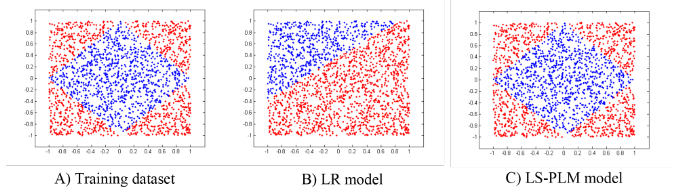

MLR / LS-PLM
MLR (mixed Logistic Regression)，又叫LS-PLM (Large Scale Piecewise Linear Model)
MLR主要是为了解决LR无法很好的拟合非线性可分数据而被提出的，从2012年开始就在阿里开始使用
MLR和普通的LR的对比效果如下：

MLR公式
MLR使用了分而治之的思路，划分了m个区域，然后每个区域中都进行LR，这里的m个区域数量是自己设置的，区域的范围相当于隐变量，是要求解的
这个思路的公式化的表达为：
\[p\left( y=1 \mid x \right) = g\left( \sum\limits^m_{j=1} \sigma(u^T_jx) \eta(w^T_jx) \right)\]\(\sigma(\cdot)\)是划分函数，对于一个样本\(x\)被分到每个区域的概率；\(\eta(\cdot)\)是拟合函数，就是在每个区域中为正样本的概率；\(g(\cdot)\)使模型满足概率函数
特别的，让\(\sigma(\cdot)\)为softmax，让\(\eta(\cdot)\)为sigmoid，\(g(x)=x\)，则概率公式为：
\[p\left( y=1 \mid x \right) = \sum\limits^m_{i=1} \frac{exp(u^T_ix)}{\sum^m_{j=1}exp(u^T_jx)} \cdot \frac{1}{1+exp(-w^T_ix)}\]为了防止过拟合，并且是参数更稀疏，增加了正则项，所以目标函数为：
\[\begin{align} &\mathop{\arg\min}_{\Theta} f(\Theta) = loss(\Theta) + \lambda \lVert\Theta\rVert_{2,1} + \beta \lVert\Theta\rVert_1 \\ &loss(\Theta) = -\sum\limits^n_{t=1}\left[ y_t log(p(y_t=1 \mid x_t,\Theta)) + (1-y_t) log(p(y_t=0 \mid x_t, \Theta)) \right] \\ \end{align}\]这里的\(\lVert\Theta\rVert_{2,1} = \sum^d_{i=1}\sqrt{\sum^{2m}_{j=1}\theta^2_{ij}}\)，是为了特征选择；\(\lVert\Theta\rVert_1 = \sum_{ij} \lvert\theta_{ij}\rvert\)是为了稀疏性
最优化目标函数
由于目标函数非凸且无法求导，所以MLR提出了使用右导数进行最优化
（具体还需要再研究下）
工程实现
为了让MLR能在大数据集上跑，工程方面使用了参数服务器，架构如下：
他的参数服务器跟通常的参数服务器不同，参数节点（server）和计算节点（worker）是放在同一个机器上，这样做的好处是最大化利用CPU和内存：
-
参数节点通常只是提供pull和push的api，计算消耗较小，而计算节点计算消耗较大，可能最大化利用CPU
-
计算节点通常不需要占用太多内存，而现在的服务器一般内存都比较大，会对内存造成浪费，将参数节点放上去能最大化利用内存
（个人觉得这个思路非常优秀，不过如果参数节点需要的数量和工作节点需要的数量不一样怎么办？）
这里解释一下参数服务器（Parameter Server），参数节点负责保存模型参数，因为现在的模型参数规模很大，所以每个节点只保存一部分参数，计算节点负责计算被分到的训练数据，通常特征很稀疏，所以他先向参数节点pull所需的参数，计算本地的训练数据后将梯度push回参数节点，由参数节点更新参数
公共参数优化技巧
一个用户访问一个页面可能会展示多个广告，即一下子有多个样本要预测，那对于同一个用户，很多特征都是一致的，比如年龄、性别等，将其称为公共参数，这些参数可以只计算一次，然后多个样本间共享，每个样本额外计算非公共参数，另外，计算梯度的时候也是用这个技巧
参考
Learning Piece-wise Linear Models from Large Scale Data for Ad Click Prediction